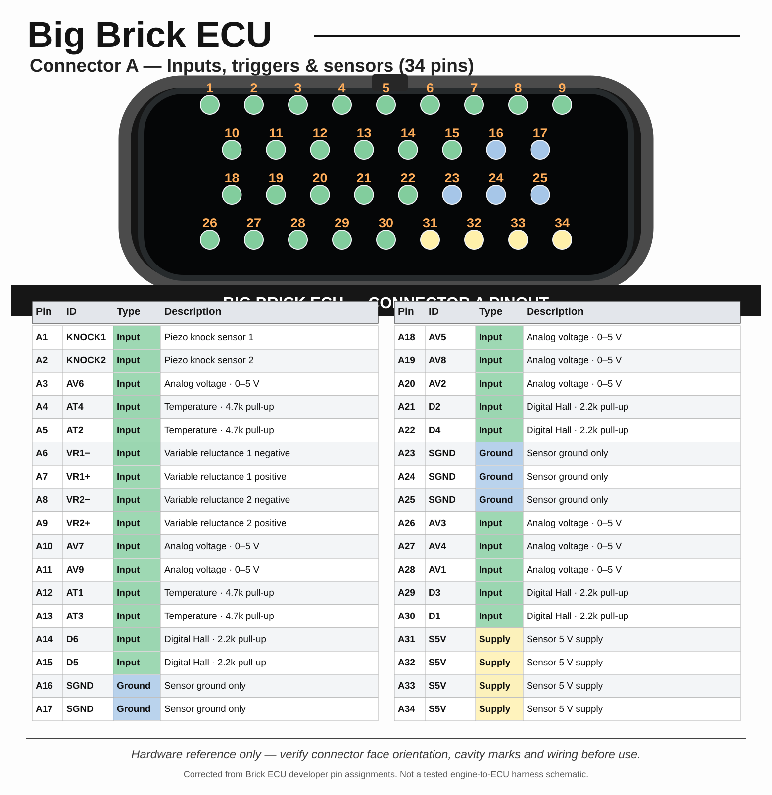

Connector A — inputsFull page

34 sensor/trigger positions; includes corrected A17 sensor ground and A19 analog input.
Open full-size chartFull-page technical charts with connector illustrations, complete pin tables and engine-hardware research. Connector drawings are based on Brick ECU's corrected pin data. Engine sheets are research drafts, not working harness diagrams.
Filter by pin ID, signal name, or connector and copy the results.